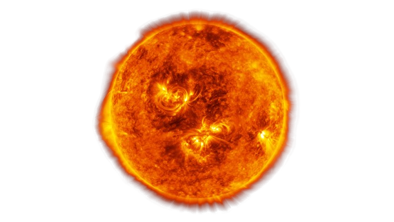
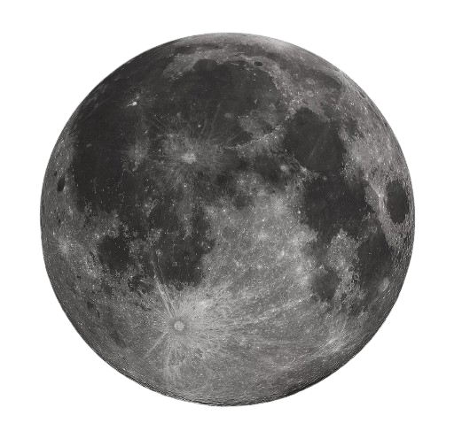
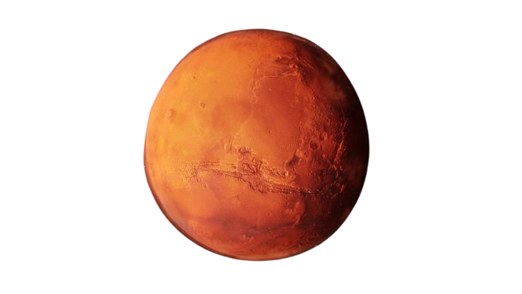
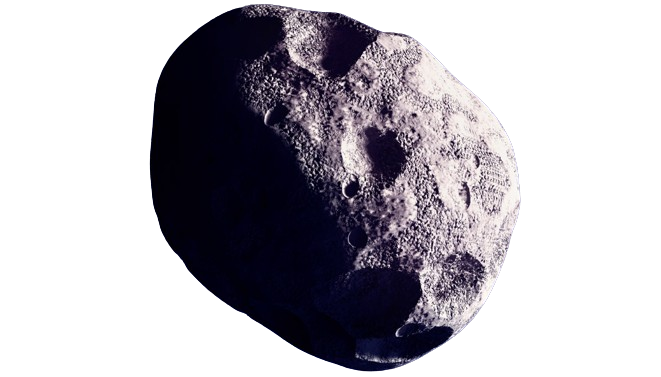
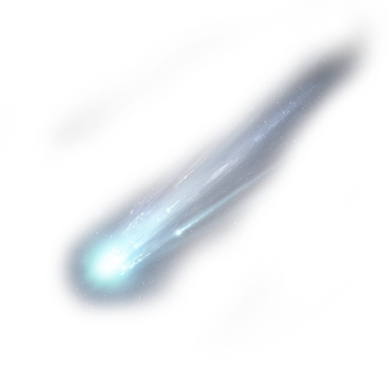
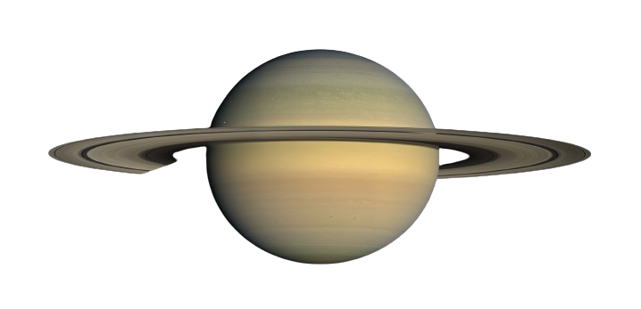
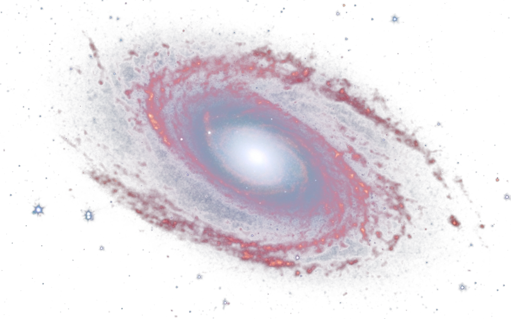
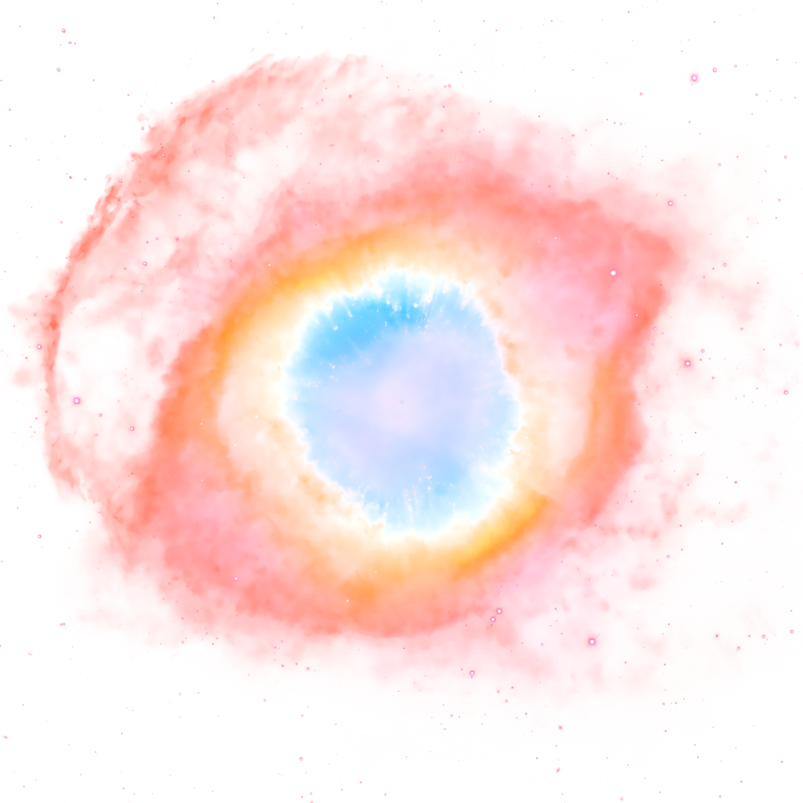
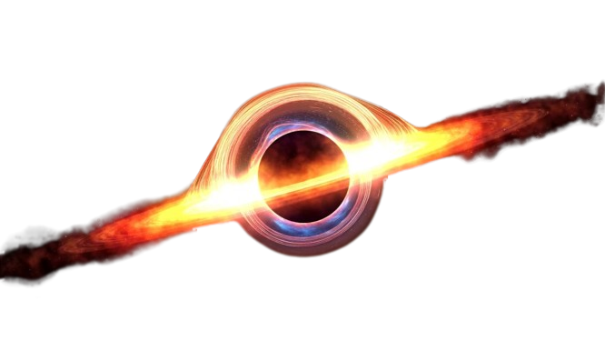
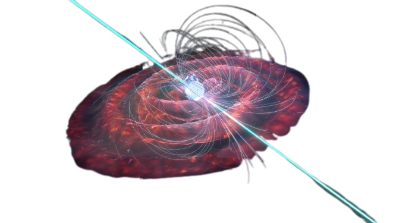

The sun is a star that is the center of our solar system. It is the largest object in the solar system, accounting for 99.86% of its mass. The sun is a medium-sized star, about 110 times larger than Earth and more than 300,000 times more massive. It is a yellow dwarf star, with a stellar classification of G2V. The sun is made up of mostly hydrogen and helium.
The Sun, the radiant heart of our solar system, is a dazzling celestial sphere that sustains life on Earth. Composed mostly of hydrogen (about 74%) and helium (about 24%), the Sun's intense gravitational pull and extreme temperatures at its core give rise to a continuous nuclear fusion process. This process releases an immense amount of energy, generating light and heat that radiate into space. The Sun's energy not only powers the solar system but also drives the Earth's climate, weather patterns, and the photosynthesis process in plants, which forms the foundation of the planet's food chain.
Structured into layers including the core, radiative zone, convective zone, and solar atmosphere (consisting of the photosphere, chromosphere, and corona), the Sun exhibits various phenomena such as sunspots, solar flares, and prominences. These features are a testament to the dynamic nature of our nearest star. Its gravitational influence governs the orbits of planets, moons, and other celestial bodies in the solar system. The Sun, while seemingly constant, goes through an approximately 11-year cycle of solar maximum and minimum, influencing space weather and solar activity. Studying the Sun is critical not only for understanding the dynamics of our solar system but also for gaining insights into the broader field of astrophysics and the life cycle of stars.
The Moon is Earth's only natural satellite. It has a prominent place in the night sky and has been the subject of human fascination for centuries.
The Moon, Earth's only natural satellite, holds a profound place in our cosmic neighborhood. Its mesmerizing phases, from the New Moon to the Full Moon, have inspired cultures and mythologies throughout history. The Moon's surface is a testament to a tumultuous history, marked by impact craters, expansive plains, and towering mountains. Its most prominent features include the lunar maria, dark basaltic plains formed by ancient volcanic activity, and the highland regions, which are heavily cratered. The Moon's appearance is further characterized by polar ice caps, composed of a mix of water ice and frozen carbon dioxide. Despite its tranquil appearance from Earth, the Moon lacks a significant atmosphere, resulting in extreme temperature variations between its day and night sides.
Scientific exploration of the Moon has been a pivotal endeavor, culminating in historic human landings during NASA's Apollo missions. The lunar soil, or regolith, has provided valuable insights into the Moon's composition and history. With a surface scarred by impact craters and remnants of volcanic activity, the Moon stands as a celestial time capsule, offering clues about the early solar system and the dynamic processes that shaped Earth and its satellite. In contemporary times, the Moon continues to be a focus of scientific research and exploration, with plans for future manned and unmanned missions aiming to unlock further mysteries and potentially establish a sustained human presence on its surface.
Mars is the fourth planet from the Sun and the second smallest planet in the solar system. It is often referred to as the "Red Planet" because of its reddish appearance.
Mars, the fourth planet from the Sun, has long captured human fascination with its striking reddish hue and diverse terrain. Its surface is marked by expansive plains, towering volcanoes, and the immense Valles Marineris canyon. The planet's thin atmosphere, composed mostly of carbon dioxide, contributes to significant temperature fluctuations across its surface. Polar ice caps, comprising water and dry ice, undergo seasonal changes. Mars boasts two small moons, Phobos and Deimos, which are irregularly shaped and likely captured asteroids. Over the years, exploration missions, such as those led by NASA, including the Spirit, Opportunity, and Curiosity rovers, have provided valuable insights into Mars' geology, climate, and potential for past microbial life. The planet remains a focal point for future exploration, with ambitious plans for crewed missions aiming to establish a human presence on Mars in the coming decades. Mars is not only a target for scientific exploration but also a key contender in the search for extraterrestrial life. While its current surface conditions are harsh and arid, evidence suggests the possibility of past liquid water, sparking ongoing investigations into the potential habitability of subsurface environments. The prospect of microbial life or remnants of past life on Mars adds to the planet's allure. As both governmental and private entities envision crewed missions to Mars in the near future, the Red Planet stands at the forefront of human endeavors to expand beyond Earth and deepen our understanding of the broader mysteries of our solar system.
Asteroids are small rocky objects that orbit the Sun, primarily found in the asteroid belt between Mars and Jupiter. They vary in size, from small boulders to objects several hundred kilometers in diameter. Asteroids are remnants from the early solar system and can be composed of metals, silicate rock, and other materials. Some asteroids have irregular shapes, while others may have defined shapes and even small moons or companions.
Asteroids, often referred to as minor planets or planetesimals, are rocky remnants from the early days of our solar system. These small celestial bodies primarily reside in the asteroid belt, a region situated between the orbits of Mars and Jupiter. Ranging in size from a few meters to hundreds of kilometers in diameter, asteroids exhibit a diverse array of shapes and compositions. Composed mainly of silicate rock, metals, and some organic compounds, asteroids offer valuable insights into the formation and evolution of our solar system. While the majority of asteroids orbit the Sun in the asteroid belt, some follow trajectories that bring them close to Earth, posing potential impact threats and making them subjects of scientific scrutiny and observation.
Asteroids play a crucial role in understanding the early dynamics of the solar system and the processes that led to the formation of planets. Their study is not only significant for planetary science but also holds implications for Earth's potential vulnerability to asteroid impacts. Ongoing research, including space missions and telescopic observations, contributes to expanding our knowledge of these celestial bodies and refining strategies for planetary defense against potential hazardous impacts from space debris.
Comets are icy bodies that originate from the outer regions of the solar system. They have a nucleus, composed of water ice, frozen gases, dust, and organic compounds. When a comet approaches the Sun, heat causes the nucleus to release gas and dust, forming a glowing coma and a tail that always points away from the Sun. Comets are often considered as "dirty snowballs" or "icy dirtballs." Their elliptical orbits can bring them close to the Sun and then take them back to the outer solar system.
Comets are captivating celestial bodies characterized by their icy composition and distinctive tails, making them among the most enchanting phenomena in the night sky. Originating from the outer reaches of the solar system, comets consist of a nucleus, a solid core made up of water ice, frozen gases, dust, and various organic compounds. As a comet approaches the Sun in its highly elliptical orbit, the Sun's heat causes the volatile components of the nucleus to sublimate, creating a glowing coma—a cloud of gas and dust—and a luminous tail that always points away from the Sun due to the solar wind. This dazzling display is one of the most recognizable features of comets and is visible from Earth during their perihelion, the closest point to the Sun in their orbit.
Comets are often described as "dirty snowballs" or "icy dirtballs" due to their composition, combining frozen volatiles with embedded dust particles. These icy remnants provide a window into the primordial materials that existed in the early solar system, offering valuable insights into the conditions that led to the formation of planets and other celestial bodies. The study of comets is not only of scientific interest but also holds cultural significance as these cosmic wanderers have been observed and documented throughout human history, shaping our understanding of the dynamic and ever-evolving nature of the cosmos.
Saturn, the sixth planet from the Sun in our solar system, is renowned for its stunning ring system, making it one of the most visually striking objects in the night sky. This gas giant, characterized by its pale golden hue, is primarily composed of hydrogen and helium. Its distinctive ring system, composed of icy particles ranging in size from tiny grains to large chunks, encircles the planet and gives Saturn its unparalleled beauty. These rings, which are prominently visible through telescopes from Earth, consist of several main divisions, each with its unique characteristics. Saturn is not only known for its mesmerizing appearance but also for its complex and dynamic atmosphere. The planet's swirling cloud bands and numerous storms, including the famous hexagonal storm at its north pole, showcase the atmospheric dynamics at play. Saturn has a diverse family of moons, with Titan being the largest and most intriguing. Titan possesses a thick atmosphere and even lakes and rivers of liquid methane and ethane on its surface. Studying Saturn and its moons, including ongoing exploration by spacecraft like NASA's Cassini, continues to deepen our understanding of planetary formation, atmospheres, and the potential for diverse environments within our solar system.
Galaxies are colossal cosmic structures that serve as the building blocks of the universe. These immense systems, comprising stars, gas, dust, and dark matter, are bound together by gravity. The variety in galaxy shapes, sizes, and compositions is staggering, ranging from spirals with elegant arms to ellipticals with a more rounded appearance. At the heart of many galaxies lies a supermassive black hole, exerting a gravitational influence that shapes the galaxy's dynamics. The Milky Way, home to our solar system, is a barred spiral galaxy, and it is just one among billions in the observable universe. Galaxies form clusters, and the gravitational interactions within these clusters contribute to the intricate dance of celestial bodies on a cosmic scale. Studying galaxies unveils crucial insights into the evolution of the universe, offering a glimpse into the past and shedding light on the forces that govern the cosmos.
Nebulae are ethereal clouds of interstellar gas and dust, dispersed throughout the vastness of space, serving as cosmic nurseries and stellar recycling centers. These captivating formations come in various shapes and sizes, ranging from diffuse and irregular clouds to more structured and intricate patterns. Within nebulae, the gravitational forces initiate the birth of new stars, as regions of dense gas collapse under their own gravity, eventually igniting nuclear fusion. Some nebulae, such as emission nebulae, glow brightly due to the energy emitted by young, hot stars within them, while reflection nebulae reflect the light of neighboring stars. Planetary nebulae, on the other hand, are the remnants of dying stars, shedding outer layers of material in intricate patterns. The beauty of nebulae extends beyond their visual allure; they play a pivotal role in the cosmic cycle of stellar life and death, shaping the composition and dynamics of galaxies over immense spans of time. Studying these celestial tapestries provides astronomers with invaluable insights into the processes that have shaped and continue to shape the universe.
A black hole is an enigmatic and extraordinary cosmic entity, born from the gravitational collapse of a massive star. These mysterious objects exhibit an intense gravitational pull, so strong that not even light can escape their grasp, rendering them virtually invisible and earning them their ominous name. Black holes come in various sizes, with stellar-mass black holes formed by the remnants of massive stars and supermassive black holes residing at the centers of galaxies, containing millions or even billions of times the mass of our Sun. Despite their invisible nature, the presence of a black hole becomes evident through its gravitational influence on nearby matter. As objects spiral into a black hole, they form an accretion disk, emitting intense radiation detectable by telescopes. The boundary surrounding a black hole, known as the event horizon, marks the point of no return. Beyond this threshold, the laws of physics, as we currently understand them, break down. Black holes remain one of the most fascinating and least understood phenomena in the cosmos, challenging our understanding of space, time, and the fundamental forces that govern the universe.
Pulsars are celestial wonders that emerge from the remnants of massive stars undergoing supernova explosions. These highly-magnetized and rapidly-rotating neutron stars emit beams of electromagnetic radiation from their magnetic poles. As the pulsar rotates, these beams sweep across space, creating a detectable signal that resembles the regular ticking of a cosmic clock. Pulsars were first discovered in 1967 by astronomers Jocelyn Bell Burnell and Antony Hewish, who initially dubbed them "LGM-1" (Little Green Men), suspecting the signals could be artificial in origin. However, it was soon realized that these pulsating sources were natural astronomical phenomena. Pulsars are incredibly dense, packing the mass of the Sun into a sphere about 20 kilometers in diameter. Their precision-like rotational periods, ranging from milliseconds to seconds, make them invaluable cosmic timekeepers. These cosmic lighthouses have since become essential tools for astronomers, providing insights into fundamental physics, such as the behavior of matter under extreme conditions and the dynamics of stellar remnants. The study of pulsars continues to enhance our understanding of the intricate workings of the universe.
